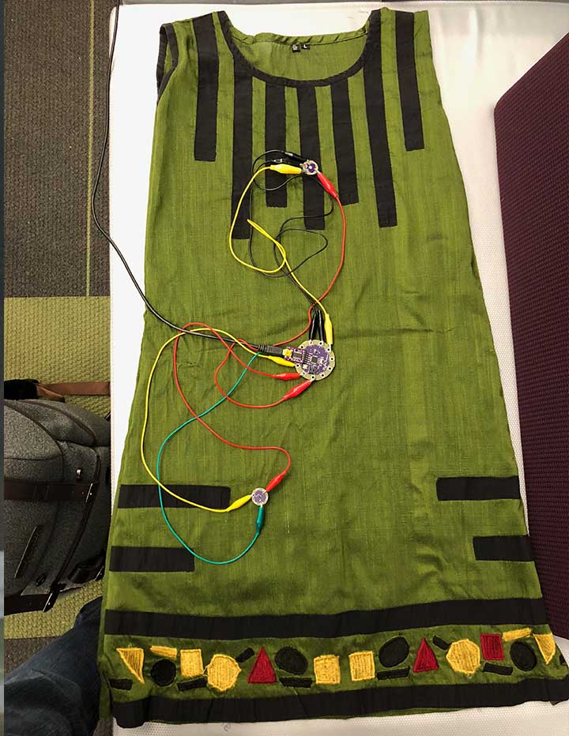

<div id="portfolio-page" class="portfolio-page-content">
    <div class="container">
        <div class="portfolio-nav">
            <div id="portfolio-close-button" class="portfolio-close-button">
                <a href="#portfolio"><i class="fa fa-close"></i></a>
            </div>
        </div>

        <div class="portfolio-title">
            <h1>Saurakshak</h1>
        </div>

        <div class="row">
            <div class="col-sm-7 col-md-7 portfolio-block">
                <div class="owl-carousel portfolio-page-carousel">
                    <div class="item">
                        
                    </div>
                    <div class="item">
                        
                    </div>
                </div>

                <div class="portfolio-page-video embed-responsive embed-responsive-16by9">
                  <iframe src="https://docs.google.com/presentation/d/e/2PACX-1vQLDdchy5yCVPan3p-k-mk8wBWNgc7bICWi_7ADVnsrNhWaSIkh8XLYlFa5BRzCLflTHXtKpO0sLx_m/embed?start=false&loop=true&delayms=5000" frameborder="0" width="960" height="569" allowfullscreen="true" mozallowfullscreen="true" webkitallowfullscreen="true"></iframe>
                </div>


                <script type="text/javascript">
                    jQuery(document).ready(function($){
                        $('.portfolio-page-carousel').owlCarousel({
                            smartSpeed:1200,
                            items: 1,
                            loop: true,
                            dots: true,
                            nav: true,
                            navText: false,
                            margin: 10
                        });
                    });
                </script>
            </div>

            <div class="col-sm-5 col-md-5 portfolio-block">
                <!-- Project Description -->
                <div class="block-title">
                    <h3>Description</h3>
                </div>
                <ul class="project-general-info">
                    <li><p><i class="fa fa-user"></i> John Cedrick A. Del Rosario, Christos Zikopoulos, Ava Posner</p></li>
                    <li><p><i class="fa fa-globe"></i> <a href="https://github.com/gadeShivani/Saurakshak/wiki" target="_blank">https://github.com/gadeShivani/Saurakshak/wiki</a></p></li>
                    <li><p><i class="fa fa-calendar"></i> October - December, 2017</p></li>
                </ul>

                <p class="text-justify">
                  <ul>
                    <li>Developed a safety device to embed within clothing pieces for women using Lilypad Arduino circuits and NFC tags, which enables women to rapidly press the device in unsafe situations.</li>
                    <li>Integrated motion sensors with a Lilypad board to light up a series of LEDs on the dress.</li>
                  </ul>
                </p>
                <!-- /Project Description -->

                <!-- Technology -->
                <div class="tags-block">
                    <div class="block-title">
                        <h3>Technology and Methods</h3>
                    </div>
                    <ul class="tags">
                        <li><a>Arduino</a></li>
                        <li><a>Lilypad</a></li>
                        <li><a>Primary and Secondary Research</a></li>
                    </ul>
                </div>
                <!-- /Technology -->
            </div>
        </div>
    </div>
</div>
